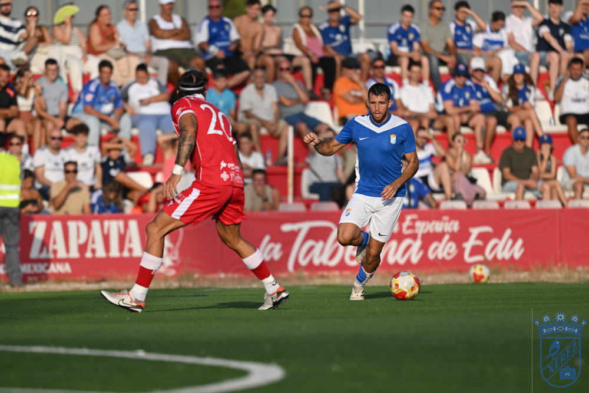

El Xerez empata ante un buen Portuense


Foto: PuroXerecismoLos azulinos firman su primer empate del verano, sin goles, frente a un candidato al play-off de ascenso a Segunda RFEF
El Xerez CD conoció anoche su primer tropiezo del verano, aunque con matices. En el Josè del Cuvillo, el conjunto de Xavi Molist no pasó del empate a cero ante un Racing Club Portuense que se presenta esta temporada como uno de los aspirantes a pelear por el play-off de ascenso a Segunda RFEF en su regreso a la categoría de bronce del fútbol nacional. Un rival de entidad, ordenado y con buen fútbol, que supo maniatar a un Xerez todavía en fase de construcción.
Hasta ahora, la pretemporada azulina había sido un no parar de buenas noticias. Los xerecistas habían firmado pleno de victorias en sus tres primeros compromisos estivales: golearon al Jerez Industrial, un Primera Andaluza, en el Trofeo Pedro Garrido; superaron con solvencia al Ceuta B, de Tercera Federación, por dos goles a cero; y doblegaron también a otro representante del Grupo X, el Chiclana, por la mínima. Ante los rojiblancos portuenses, sin embargo, el gol se resistió por primera vez este verano.
Un rival que no dio ni un metro de ventaja
El Racing Portuense planteó un partido serio, vertical cuando tuvo que serlo y bien plantado atrás, y apenas concedió ocasiones claras a un Xerez que, pese a rondar el área rival en varios tramos del encuentro, no logró encontrar el resquicio necesario para hacer daño. Ni la posesión ni las aproximaciones azulinas se tradujeron en disparos con verdadero peligro, y el guion del partido terminó premiando la solidez defensiva de un conjunto que aspira a mucho esta campaña.
La primera mitad dejó también algún que otro exceso por parte local. El conjunto portuense, además de ordenado, se mostró intenso en la presión y firmó un par de entradas a destiempo que rompieron en varios momentos el ritmo del partido y que el colegiado castigó con sendas tarjetas amarillas, sin que ello condicionara en exceso el desarrollo del amistoso.
Molist repartió minutos, como viene siendo tónica habitual en esta pretemporada, dando 45 minutos a cada bloque para seguir tomando nota de cara al arranque liguero del 6 de septiembre. El once inicial lo formaron Pantoja bajo palos; Guille Campos y Salas como laterales; Moi y Josete en el eje de la zaga; Raúl López e Isuskiza en el doble pivote; Óscar Lorenzo y Zelu abiertos por las bandas; Peregrina como enganche; y Rubén Mesa en punta.
Tras el paso por vestuarios, el técnico catalán dio entrada a un bloque plagado de canteranos que se mezcló con nombres del primer equipo: Marcos Alconchel, Gabri, David Lachica, Chacartegui, Manu Galán, Fali, Isma, Zequi, Jaime López, Jaime Fernández, Óscar Ganfornina, Dani Sánchez, Samu Rubiales y Sebas Rubiales fueron desfilando por el césped en la segunda mitad, sin que el guion del partido cambiara sustancialmente.
Balance positivo pese al empate
Más allá del resultado, la lectura que deja el choque ante el Racing Portuense es la de un Xerez CD que sigue engarzando piezas, con Molist rotando y probando fórmulas antes de que la competición empiece a apretar de verdad. El primer cero de la pretemporada llega, además, ante un rival de garantías, lo que relativiza cualquier lectura negativa del marcador. El equipo azulino seguirá su preparación en los próximos días, con la mirada puesta ya en el estreno liguero del 6 de septiembre en campo del Estepona.
← Volver a la portada